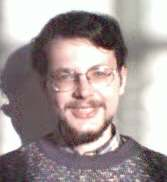

|
Edward A. Hirsch
I am a full professor in the Department of Computer Science, Ariel University. I am interested in algorithms and complexity. If you are interested in doing MSc, PhD, or postdoc under my supervision, please drop me an email to edward.a.hirsch (google mail). You can guess (some of the) possible topics from the links below. Contents: |
 |